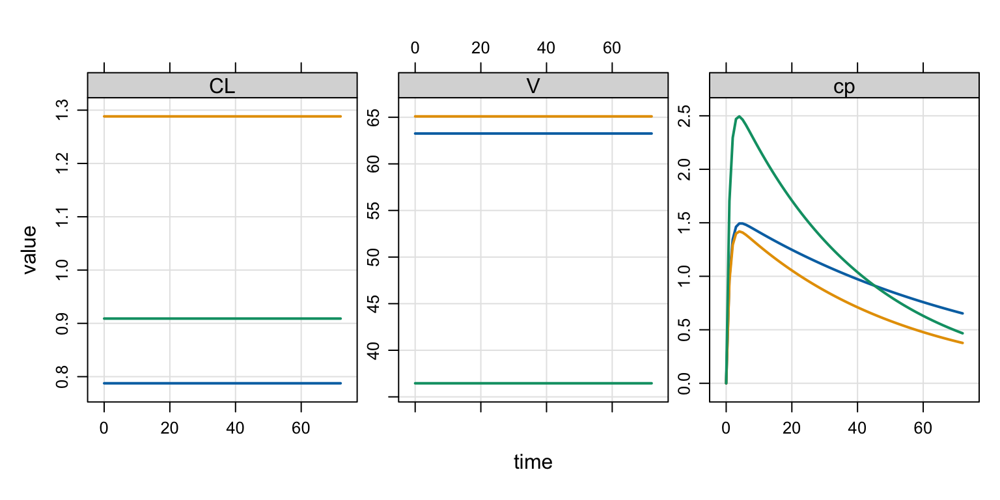

[ param ] WT = 70 , BMI = 23
[ main ]
double CL = THETA1 * pow(WT/70,0.75) * exp(ETA(1));
double V = THETA2 * pow(BMI/23,THETA3) * exp(ETA(2));1 Introduction
This blog post will show you how to use a single model to do both
population simulation (with patient-specific covariates and random ETAs) and simulation from a specific set of empirical Bayes estimates (EBE; a specific, pre-defined set of individual parameters like what you get out of your NONMEM run). The basic implementation for this approach was pioneered by Tim Waterhouse at MetrumRG.
2 Background
The situation is this: you’ve coded your population model in terms of THETA, ETA, some covariates and the like:
For this model, you feed in subject-specific WT and BMI, mrgsolve will simulate ETA(1) and ETA(2) and you will get a subject-specific CL and V that can be used to advance the system.
But what if you have a specific set of CL and V that came from your NONMEM model output that you want to used here instead? For example, I have this set of EBE that I want to use?
par# A tibble: 3 × 3
ID CL V
<dbl> <dbl> <dbl>
1 1 0.788 63.3
2 2 1.29 65.1
3 3 0.909 36.5How can I work these into these into the simulation with this model?
3 A solution
3.1 Re-name the EBE
Instead of using CL and V in your data, rename them to CLI and VI
par <- rename(par, CLI = CL, VI = V)
par# A tibble: 3 × 3
ID CLI VI
<dbl> <dbl> <dbl>
1 1 0.788 63.3
2 2 1.29 65.1
3 3 0.909 36.5The specific names you choose isn’t as important as naming them something other than what you used in the model.
3.2 Add parameters to the model
Now you need to add these as parameters in the model so mrgsolve will pick them up when you pass them in on the data set
[ param ]
WT = 70 , BMI = 23
CLI = -1, VI = -1Note we gave these parameters a special value: -1. This will be important for the next step.
3.3 Conditional update of CL and V
Now, after the population parameters are declared and defined, you can put a block of code that updates those variables only if CLI is greater than zero; that is, if the updated parameter is something other than that special / null value, we’ll use that; otherwise use the random simulated value
[ main ]
double CL = THETA1 * pow(WT/70,0.75) * exp(ETA(1));
double V = THETA2 * pow(BMI/23,THETA3) * exp(ETA(2));
if(CLI > 0) {
CL = CLI;
V = VI;
}3.4 Include CLI and VI in the data
Now, whenever we attach these specially named parameters to the data, we’ll get a simulation from the EBE; otherwise, we’ll get the simulation from the covariates and randomly drawn ETA.
library(mrgsolve)
data <- expand.ev(amt = 100, ID = 1:3) %>% left_join(par)
data ID time amt cmt evid CLI VI
1 1 0 100 1 1 0.7875775 63.25656
2 2 0 100 1 1 1.2883051 65.09495
3 3 0 100 1 1 0.9089769 36.457814 Example
4.1 Model
code <- '
[ param ]
WT = 70 , BMI = 23, KA = 1
CLI = -1, VI = -1
[ param ] THETA1 = 1, THETA2 = 30, THETA3 = 0.21
[ main ]
double CL = THETA1 * pow(WT/70,0.75) * exp(ETA(1));
double V = THETA2 * pow(BMI/23,THETA3) * exp(ETA(2));
if(CLI > 0) {
CL = CLI;
V = VI;
}
[ omega ] 0.2 0.8
[ pkmodel ] cmt = "depot,cent", depot = TRUE
[ error ]
double cp = cent/V;
'
mod <- mcode("ebe", code, capture = "CL,V,cp")Building ebe ... done.4.2 Simulate
out <- mrgsim(mod, data, end = 72)
plot(out, "CL,V,cp")
4.3 Check
Verify that the CL and V in the output match the CLI and VI in the input
data ID time amt cmt evid CLI VI
1 1 0 100 1 1 0.7875775 63.25656
2 2 0 100 1 1 1.2883051 65.09495
3 3 0 100 1 1 0.9089769 36.45781count(as_tibble(out), ID, CL, V)# A tibble: 3 × 4
ID CL V n
<dbl> <dbl> <dbl> <int>
1 1 0.788 63.3 74
2 2 1.29 65.1 74
3 3 0.909 36.5 744.4 Random simulation
Now, if we drop the EBE from the data, we get our random basic random simulation
data2 <- mutate(
data,
CLI = NULL,
VI = NULL,
BMI = c(20, 23, 26),
WT = c(60, 70, 80)
)
mrgsim_df(mod, data2) %>% count(ID, CL, V) ID CL V n
1 1 2.002942 38.62481 26
2 2 1.392939 54.66642 26
3 3 1.047866 41.42735 26mrgsim_df(mod, data2) %>% count(ID, CL, V) ID CL V n
1 1 1.372742 221.93263 26
2 2 1.784479 19.98884 26
3 3 1.777794 15.60165 26